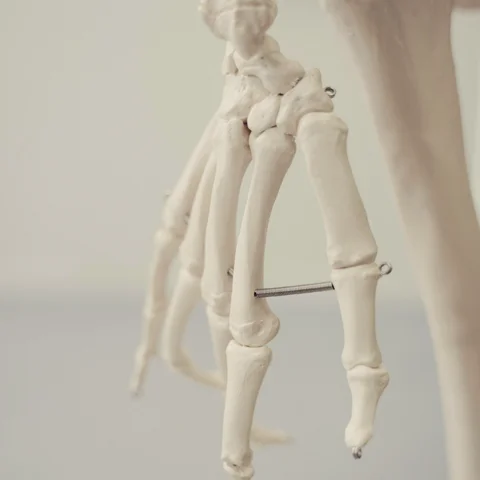

Articles santé et bien-être
Articles autour de l'écoute du corps, de la progression personnelle et de l'équilibre entre santé physique et bien-être mental, pour avancer à ton rythme vers un mieux-être durable.
On n'en parle
presque
jamais…
Et pourtant c'est fondamental 💛. Le périnée, c'est le socle de ton corps. Il travaille à chaque souffle, chaque effort, chaque mouvement...
Dans 3 mois, rien ne changera… si tu ne changes rien
Tu veux : ✨ moins de douleurs ✨ plus d'énergie au quotidien ✨ te sentir mieux dans ton corps ✨ retrouver un meilleur équilibre...
Personne ne
peut agir
à ta place
Ni ton médecin, ni ton coach, ni ton entourage. 👉 Ils peuvent t'accompagner, te conseiller, te guider. Mais la décision de passer à l'action...
Où serez-vous
dans
6 mois ?
Dans mon accompagnement, je constate souvent la même chose : beaucoup de femmes attendent “le bon moment” pour prendre soin de...
Les jours où tu n'as pas envie comptent encore plus…
Ce n'est pas les jours où tu es motivée
qui changent ton corps.
C'est les jours où :
👉 tu es fatiguée
👉 tu n'as pas envie
👉 tu hésites...
Et si tu arrêtais de vouloir “maigrir”… pour enfin...
Tu penses que ton objectif, c'est de perdre du poids. Mais au fond, ce que tu veux vraiment, c'est : te sentir bien dans ton corps retrouver de l'énergie...
Douleurs articulaires : faut-il arrêter le sport ?

Beaucoup de femmes me disent :
“J'ai mal, donc je dois arrêter.”
En réalité… c'est souvent l'inverse.
Le mouvement adapté...
Le stress
peut-il
faire grossir ?
Oui.
Quand le stress devient chronique, le
cortisol augmente.
Et cela peut :
- favoriser le stockage,notamment...
Sommeil, douleurs et perte de poids : le trio invisible
On parle alimentation.
On parle sport.
Mais on oublie le sommeil.
Un manque de sommeil peut :
- augmenter l'inflammation...
Si tu te reconnais là-dedans, lis jusqu'au bout
Chaque année c'est pareil. Mars arrive. On veut s'y remettre “sérieusement”. Mais ton corps n'a pas besoin de violence. Il a besoin de cohérence...
Si tu te reconnais là-dedans, lis jusqu'au bout
Fatigue constante. Douleurs articulaires. Découragement. Culpabilité de ne pas “en faire assez”. 👉 Ce n'est pas un manque de...
L'avenir dépend de ce que nous faisons dans le présent
Mahatma Gandhi
Chaque petit geste compte.Chaque mouvement.
Chaque moment où tu choisis de t'écouter plutôt que de...
Les Victoires
du
Vendredi
Et si, pour une fois, on arrêtait de ne voir que ce qui ne va pas ?
Quand on vit avec du surpoids ou des douleurs articulaires, on a tendance...